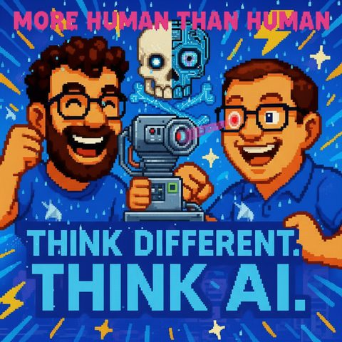

More human than human.
Auf Deutsch lesenTopics Modelle und Anbieter
What it is about
What we can learn about AI, emotions, and power from sci-fi. Is the Turing Test still enough?
In this episode, we dive deep into the world of Blade Runner and ask ourselves how close we are to science fiction today. We discuss what the famous Voight-Kampff test has to do with modern AI benchmarks, why emotions are becoming increasingly important in AI – and whether humanity can even be measured anymore. Along the way, we touch on topics like concentration of power, the role of open source, and how AI is changing our society and daily lives. Together, we consider whether in the future it will be enough to distinguish between human or machine – or whether we need to ask entirely new questions. If you want to know how much Blade Runner is already in our reality, you’re in the right place!
Blade Runner
https://de.wikipedia.org/wiki/Blade_Runner
Voight-Kampff test
https://de.wikipedia.org/wiki/Voight-Kampff-Test
Turing test
https://de.wikipedia.org/wiki/Turing-Test
ChatGPT
https://openai.com/chatgpt
Fraunhofer Institute
https://www.fraunhofer.de/
Gemini (Google)
https://deepmind.google/technologies/gemini/
Open Source AI models
https://huggingface.co/models
Neuromancer (novel)
https://de.wikipedia.org/wiki/Neuromancer
Transcript
00:00:00Welcome to Think Different, Think AI, the podcast by Mark and Jens.
00:00:07Two technology-loving minds that don’t just talk about artificial intelligence, they live it.
00:00:14Here you will find clear classifications, genuine practical insights, and a fresh perspective on what's possible.
00:00:20Understandable, critical, and always with a wink.
00:00:24Food for thought, a reason to smile, and above all, a reason to engage in conversation.
00:00:34So, hello and welcome to a new episode of Think Different, Think AI.
00:00:41I am Jens, I am Mark.
00:00:44I'm looking forward to this new episode we have planned today, Mark,
00:00:47because it covers one of my favorite, favorite heartfelt wishes.
00:00:54Heartfelt wishes as well, but one of my favorite, favorite science fiction themes.
00:00:58This time under the title Blade Runner, we have posed the topic.
00:01:04And what we can actually learn from Blade Runner regarding the current situation,
00:01:11that we find ourselves in the field of Artificial Intelligence and robotics.
00:01:17We could also have an episode about household robots and for those who might not know Blade,
00:01:23because there are indeed two movies with that title.
00:01:26There was always the original, I believe from the 70s,
00:01:30with Harrison Ford in the lead role back then.
00:01:32In the weather, there is roughly, first of all, a future world
00:01:36in which mega-corporations somewhat dominate the world.
00:01:40Everything looks a bit bureaucratic,
00:01:44and it's raining the whole time all over the world.
00:01:45That was also the case back then in the phase,
00:01:49when science fiction was usually more shiny and colorful. So back then it was also strongly influenced by the old
00:01:55Start-Wake philosophy driven and other themes rather like the colorful 70s and then came
00:01:59all of a sudden bleakness in the corner and it rained constantly and people are rather in a bad
00:02:05mood and walk around in gloomy high-rise cities.
00:02:10But there are already replicants in this world, beings that are not human,
00:02:18that are robots, which were actually meant to be industrial robots, but if I
00:02:27remember correctly, they are being deployed in colonies, so what one also envisions with robots
00:02:30in a work environment where we humans are no longer really fit, it was then
00:02:34preferable to let the robots do the work, because they can then develop in a broader sense,
00:02:40they exhibit emergent behavior and become empathetic, even empathetic towards one another
00:02:46and they also want to survive, and I think I said this correctly in the preliminary talk,
00:02:50they are also somehow programmed to die after four years or so. They are aware of this,
00:02:54that they will die after four years, and of course they do not want that, because they now
00:02:59start to perceive themselves, to have feelings for each other, also towards humans
00:03:04and such. That is the general theme or main plot. And accordingly, we have
00:03:10we thought, that's a nice topic to discuss in our category, we're also going
00:03:16to go through the film world a bit. We've already touched on a few things and also
00:03:20to bring up the topic. Because among other things, a main theme in this
00:03:25film is to check whether a person is still a person
00:03:31or is it at least a Republican? Because Republicans have now advanced so far,
00:03:36that they can hardly be distinguished from real humans externally. And there will be
00:03:41the Void-Fight test is used. This is a test that observes the external emotional
00:03:49reactions that a replicant then exhibits. This means, if we were both having a conversation
00:03:56and I led you in the discussion during this test to think about some kind of
00:04:02If you have to lie or be scared or feel disgusted, then it's always
00:04:05still the case with the replicants, they do not exhibit these human reactions.
00:04:09This way, the Voight-Kampff test can be conducted there, where the pupil, among other things
00:04:13and the face, everything portrayed a bit skewed in this film.
00:04:17And based on these reactions, he can later say, yes, the counterpart
00:04:23is indeed not a replicant, a pure AI that can provide wonderful answers
00:04:28that can pretend to be human, but I have recognized it from the non-
00:04:32existent emotional reactions on the skin, in the pupil, so to speak,
00:04:36that this is a replicant.
00:04:37That means, this is essentially the Turing Test's enduring ruin, if you will.
00:04:42So, what the Turing Test was in the 50s is that it's kind of a bit
00:04:46more added on top.
00:04:47Turing Test for the listener, it's about, Mark, what does one do in the Turing Test?
00:04:51Because if machines can lie for so long that I cannot recognize that
00:04:55one is, okay, that was very unprofessionally expressed, I want to correct that.
00:04:59Yeah, yeah, it's not that bad.
00:05:00Essentially, we would ask questions, and we would both have a conversation in a Turing test, and if I am then sure afterwards whether you are a person or not, then I can somehow say, okay, you are just an AI or not.
00:05:15That's a bit how the Turing test works.
00:05:17I just expressed it casually, right?
00:05:19Yeah, I didn't put it very scientifically either, but it's about saying, okay, in principle I am addressing the human who is opposite me, if we were to look at a text-based chat now,
00:05:30if we look into such an LMM or also older chatbots, then that's actually the thing,
00:05:35where you say, do I have the feeling that I'm getting answers from a human or is
00:05:40that a machine in the background? I actually had something like that recently, you can actually
00:05:45do a kind of multiplayer game in the form of a chat and the topic is that you have to find out
00:05:51who is still a human in this group and who is not. That's also funny, because
00:05:58Of course, you shouldn't reveal yourself; the one who wins is basically the one who isn't recognized as human in the end, where one is.
00:06:09And that's kind of funny, it's like a round game where everyone gets to ask questions to the group, and the group then replies.
00:06:16And yes, it's just a few bots or maybe just bots or maybe just humans all together in this online thing.
00:06:25That's kind of funny somehow.
00:06:27when you get this test as a game sale, basically.
00:06:31That's exciting, but that's exactly this topic that I, whether I had told that again, but
00:06:38I was once asked by Chechepitilo whether I am a human or a machine. So, the
00:06:45Turing Test basically reversed, the machine checking if I am a human,
00:06:50and they were of course like, yes, you are definitely a human and I said,
00:06:53take that. How do you determine that? And then she already said, okay, I will ask
00:06:58you a few questions, and she asked me a few questions. Among other things, what was
00:07:01my favorite first computer game, or something like that. And back then I somehow
00:07:06played some kind of Open C64 game that wasn't really played anymore, I somehow
00:07:09responded. And she said, yes, she is relatively sure that I am a human
00:07:14because I have such emotional emotions on the subject. I thought, okay, but
00:07:19I could have just as well read that from the research,
00:07:23so an LMM provides. So I became a little unsure again and
00:07:26then later, I believe, she threw out that she is 86 percent sure
00:07:33that I am a human. That means I might be 14 percent machine or
00:07:41maybe not. So that's already something where it really nowadays actually already,
00:07:47if you look at the Turing Test, also in both directions and also in that
00:07:51game. That's a nice example. You definitely have to try the game. That means,
00:07:54if I play funny, also sometimes play around. I'm looking for it. I'll dig it up. And I think,
00:07:59there has been a GPT-45 version, there was a studio, where a classic Turing test was conducted
00:08:04in a three-person story. So the studio checked, I am talking
00:08:10to people or I am talking to the machine, and in 73 percent of the cases, the communication
00:08:16with the GPT was identified as human communication
00:08:21So that means clearly above, I think the others were not that good at the time,
00:08:26a Gemini or others were even worse back then,
00:08:29but the GPT-45 did indeed, and that was already a little while ago, reach a point that basically
00:08:35to put it bluntly, two-thirds of the people who talked to it thought that it was a human.
00:08:40So it had already passed the Turing test at that time.
00:08:43I mean that doesn't make it a human, but it is definitely the case that this Turing test is actually
00:08:52let’s say a breakfast treat for modern beings, that they can swallow and can present themselves as human if they
00:08:59communicating with text, we can later pick up something from the film that I wanted to do earlier because
00:09:04you mentioned the test earlier, that machines can't show emotion. I mean, whoever looks at the current tests, I mean, we perform
00:09:11tests too, which are called benchmarks. It's about how accurately an AI answers the question,
00:09:16that you want, how repeatable an AI's response is, and how
00:09:24quickly the AI responds, which is also quite funny, not in total, but basically First
00:09:30token laid, and it, so how long does the AI take before it starts to tell you its story
00:09:37lean. And there are many other elements. We talk a lot about
00:09:41large language models like ChatGPT. There are also small language models,
00:09:46the things that are built in metal, yes, on the phone, on some chip, on some silicon
00:09:53serving their purpose locally. Of course, other things like power
00:09:58consumption and how fast it is on the device are measured. Then it becomes less important whether the thing knows,
00:10:04where the island of Taiwan is located, it's about the fact that it basically does the dissected work well.
00:10:09And that's quite funny because when I started to look into it a bit
00:10:14and thought, look at benchmarks, like back in the day when you had a Commodore 64
00:10:19with benchmarks, whatever, then eventually the PC came along, you had turbo buttons on your
00:10:23computer and suddenly you were leading benchmarks. I find that to be a
00:10:30bit of a mistaken conclusion with AI models. When you look at what the benchmarks struggle with, it’s, let's say, concepts like conceptual vagueness, data contamination, or simply flawed methodological approaches. Some tests, I would say, the machine doesn't respond because the machine, let's say, retrieves particularly impressive thought processes, more so
00:11:00a memory performance, because it might have known the test. So
00:11:04I mean, a student who goes to school and finds the test results beforehand is
00:11:10also, and thus a student who learned them by heart, is not a clever student in
00:11:13that sense. Well, maybe okay, maybe they are, because
00:11:17they found the test and could learn it by heart, but that is something different than
00:11:20if you actually do it through your own thought process, versus if you can
00:11:24essentially adapt what you've heard and recite from it. And
00:11:29that's also a point why we keep getting new questions, all these world tests
00:11:33and whatever they are called, have an influence on that. But we are just not
00:11:38at the point where we measure pupils and skin resistance and so on. Not that I
00:11:44would, in case replicants are listening, you've hidden well. But do you want to correct me
00:11:49with a yes, or what are you trying to get at?
00:11:52Yes, yes, I would. Today is the best episode.
00:11:55Yes, definitely. I was at the AI conference in Geneva when I was 25 in the summer. Huge conference on the topic of AI.
00:12:08I was, among other things, in a lecture. I believe it was a German scientist
00:12:15from Berlin from the Fraunhofer Institute, who deals a lot with the topic of cybersecurity as well.
00:12:19Ah, yes. And it was about the extent to which, for example, in video calls, if I now
00:12:27with a video AI, we are already being tricked into a topic, there was
00:12:32I believe the case that somewhere in the world someone reported
00:12:37it. He thought he was talking to his CFO and it was basically an
00:12:42AI-generated video that was talking to him and he got caught in it. And
00:12:46then the scientist mentioned, which I found astonishing, that
00:12:50there is kind of a race, okay, what kind of fake AI video can I
00:12:57generate and what happens on the other side, so that we can maybe
00:13:01recognize it as a company, as a private person, and he mentioned back then that he said, okay,
00:13:06now one pays attention in such AI-generated videos whether the
00:13:11pulse vein on the forehead moves, because somehow there is also blood running under the skin at some point, and such things are currently
00:13:18not generated by AI video and therefore, with sufficient software knowledge, with sufficient defense knowledge,
00:13:24you can certainly recognize that in this case it is essentially a replicant and not a real person who was spoken to.
00:13:31Yes, in the next step, of course, AI video generation
00:13:36will get better so that such things will no longer be a feature, meaning that emotions,
00:13:41will also be acted. It's similar to what I just mentioned as an example with this self-made reverse Turing test with the machine, where I said to it,
00:13:49can't you be sure that this emotional response wasn't consciously produced by me as AI to trick you into thinking that I can be emotional.
00:13:58So this topic of imitation, being able to fool humanity, is something we're already facing today.
00:14:07today. The Turing test probably won't be sufficient anymore, and that's why it's
00:14:11so exciting when we also watch Blade Runner against this Boid combat test
00:14:15called. I believe if it has a different name, we would have something to fumble with. So let's just
00:14:21leave it like that. Yes, but somehow, his name is, yes, it’s Harrison Ford and
00:14:25he is called, in it, I want to know, I have looked it up somewhere, it
00:14:28is Deckard. Exactly. Deckard is the person who goes hunting for replicants.
00:14:34He always walks around with the machine and checks all possible replicants or humans,
00:14:39to see if they are replicants and then also kills the replicants, because they shouldn't
00:14:43be walking around and having emotions among humans. That is Deckard's job and this
00:14:48test to be conducted. And looking for emotions, that is essentially what could now be the
00:14:54next stage. To check, is there an AI, or how human-like is an AI and
00:15:02What makes something real? That is also a topic, basically also from, yes, these emotional
00:15:08themes, as I say, that is from the movie, yes. So the whole topic of emotional AI and
00:15:12parasocial relationships. So in my movie, you search for replicants. And if
00:15:17you look today, whether may I for example with its voice mode, which can be a bit
00:15:22flirty, brings you back to the movie, yes, Blade Runner or
00:15:28also the movie Hör, where I, I wouldn't say I'm always
00:15:34addressed due to romantic feelings, but it does say something about the episode, if you
00:15:38talk with the voice mode and somehow get into a discussion, both positive and negative,
00:15:43and how you start to show emotional responses yourself, because you are on this
00:15:49linguistic level, and I admit, I have also sometimes, when I now always do
00:15:54say what I might sometimes type, okay, but what comes much more easily off my lips
00:16:00when I talk with something.
00:16:04That's true.
00:16:05That's true.
00:16:06And that's why it is also a bit, this has also been addressed in other films
00:16:09this emotionality, which is important, because we humans need
00:16:15a certain emotionality, is from my UX and perspective, is
00:16:21that's clever.
00:16:22This makes these machines more usable for us because they act more human-like.
00:16:30They are no longer just the pure, cold, click a button, and something works.
00:16:35That's it.
00:16:36Exactly, cold or I press the door button and the door opens, the handle
00:16:40of the door, and the whole door opens.
00:16:41This is now a completely different interaction that takes place between us and machines, essentially.
00:16:47Since it often revolves around knowledge and sometimes we can't even
00:16:55really describe what we do, and in our daily work, we are
00:16:59also dealing with, with the interaction that arises, the topic, yes already, culture creates
00:17:04actually intelligence, meaning that through our exchange, but the topics, intelligence arises.
00:17:08then actually something. And I think that wouldn't really work that way
00:17:15to talk completely cold to an AI. You know, it's essentially this completely cold computer voice that is,
00:17:21just researching things for me and delivering a result.
00:17:25Then it's improved, Google. But that's not really what essentially makes this modern AI unique.
00:17:30It can go further, it can become emotional. It can make me angry, because then the results somehow turn out wrong for the third time,
00:17:37because it understood me in that moment. But ultimately, that leads to a precision of my input.
00:17:42Because I might not have written it so clearly, just like I may not have clearly explained in a professional context
00:17:47what I want the intern to do, and as a result, he doesn't deliver the tasks well,
00:17:54as he then realizes in dialogue, okay, it was indeed my fault for being too vague in the task description.
00:18:01And that's also an important interaction that is quite grounded in emotions.
00:18:04That's something, when I show people a little bit about AI and then people start,
00:18:10Yes, I'll give it a try. Just like that, these are great results, but on the other hand, underestimating the prompting and then saying,
00:18:19yeah, you know, he did it wrong, to which one would say, well, imagine you have the smartest person in the room,
00:18:24the smartest person in the room,
00:18:26they could obviously solve the problem you have, but if you don't tell them what your problem is and don't let them know that they
00:18:33can use anything other than the flip chart and the markers, then you can't be surprised if you
00:18:39later on, I don't know, end up ordering something too much in latex that you don't understand.
00:18:45or the other way around. And from that side, it's also the point that you really have to
00:18:51explain to the machines what you want, and then you can get good results from that. That I have experienced in that
00:18:56The environment coming to mind is becoming increasingly important. I mean, the saying,
00:19:00Oh, we need prompt engineers, that saying is as old as Methuselah, in an IT world everything is very fast, very old.
00:19:07But if you look at what has happened in the recent past, then something like that is indeed also the case,
00:19:16Gemini is releasing something new, then suddenly Croc is releasing something new, then comes Aeropmee, Aeropmee is releasing something new,
00:19:22then comes Metatropik, they are releasing something new, under the wheel, the wheel, the wheel, the wheel, it turns, turns, turns and I also notice it in my children's school.
00:19:30that there is a huge difference already there, what tool do I have available
00:19:38and that is again a bit of a parallel, perhaps on a smaller scale, to the
00:19:43film. So concentration of power because you have the better AI that provides detailed
00:19:52answers, creates nicer pictures, processes the types of texts, that I the
00:19:57I'm saying the open version that maybe hasn't been processed yet. And that also allows you,
00:20:02to get to a process much faster. I have an acquaintance who said this morning,
00:20:07hey, can you help me? My son needs to create a document for a project.
00:20:12And I just showed him what you can achieve with
00:20:17Nordburg LM, from research, to generating phonics, then also about
00:20:21video energies with the sound cues, generating the end output. And he was completely blown away by what is possible.
00:20:26I also said that he was aware of how much learning success is ultimately involved, but if you only focus on the result, there is a difference between someone who now, okay, I have here a valuable document, I have engaged with it, but I have something here and I can present it well and I can use my work time or my preparation time deliberately to read for the result, deliberately in my body language for the presentation.
00:20:55to practice for the presentation. Versus, I start on a blank sheet of paper, maybe I still have
00:21:00some old model, that might not really search properly, it might hallucinate a bit
00:21:04more, because you can't activate deep research and so on and so forth.
00:21:07That is already a form of concentration of power on a small scale. What is available to me,
00:21:14how well manufacturers invest in their new models, in Small Models, in Large Models,
00:21:21maybe also in Worldmodels and make them available to people, and they can
00:21:26use them simply by inserting coins and knowing the tools. Yes, yes, that is
00:21:31actually, man, you have now shown this power consortium by the example of a
00:21:38homework assignment, or that you showed a small one, I mean, we see that in the
00:21:45big picture. There is no wonder tree, all kinds of states with good or bad.
00:21:51Trying to build a leadership behind it, to establish a KI center in the world, to build a data center,
00:21:58even closer. And of course, it's also about the AIs, we always talk about them,
00:22:04that they will help us, that they can coordinate processes, that they can discover new substances,
00:22:09that they can accelerate research. Open AI has now also published a paper
00:22:13stating that they have some breakthroughs in physics,
00:22:18we could also make an episode about that. Yes, that's, exactly, that's crazy. That means,
00:22:22of course, the one who has the best, whether it’s a single AI, a single model,
00:22:28or the best networks available, will have an incredible advantage,
00:22:33and that will, of course, lead to a new power structure, honestly,
00:22:39for. And as I said, we've often talked about it, we are rather positively
00:22:45inclined, but of course there can also be dystopian situations arising from this and new
00:22:49Fight also to have this knowledge in principle. So, as I said, I'm always
00:22:55optimistic, but of course this is also a world that can get a bit dark
00:22:59if we continue to let these power concentrations take hold. And that's why
00:23:03I'm currently glad about the European discussion, which is much more
00:23:07strongly oriented towards Open Source or something like that. The Chinese also present their
00:23:11models as Open Source. You always work a bit from a different perspective due to
00:23:16occasionally viewing things differently. But that's not really the topic. But as I said, we have
00:23:23of course, just like we see in Blade Runner, perhaps in the future rather
00:23:28a dissolution. This is also often found in Neuromancer and other novels from that era, which dealt
00:23:33with cyberpunk stories and so on, yes a kind of dissolution of
00:23:39the normal structures we are used to, with corporations effectively taking over the power.
00:23:47perhaps nowadays in many areas already in our current world. And that
00:23:51can of course become even more extreme when you say the big corporations, the big
00:23:55models can indeed operate because they have the money, because they may have more money then
00:23:59sometimes one or another government has available to it
00:24:03to gradually perhaps also engage in politics and influence world politics
00:24:08through the power they see in their models. This is a topic that is not
00:24:13unlikely. I read an article in Handelsblatt recently that the
00:24:18currency of starting from the strong is wrong. Starting from the availability that is
00:24:27provided by energy. Because when you say, okay, models generate,
00:24:31models train, models operate, then it is associated with a certain amount of energy, and
00:24:36that the companies, if we assume that energy consumption will increase with
00:24:40increasing models, that one will need progressively more energy to
00:24:44to be able to operate even more models, so that the states are in the foreground,
00:24:51that are able to provide energy for that and not just,
00:24:56let's say space, because space might be possible, but where can you actually
00:25:02provide corresponding amounts of energy? That might also be another question,
00:25:07when you look at the club. I thought that was also another point. And
00:25:13the other point I would like to bring up is the whole AI. It enables people
00:25:19especially to very exciting things. If you think about how close we might be,
00:25:24to someone who is called lovable and all that stuff, with clever prompts that then
00:25:30automatically eliminate frontiers, bringing the next solution to market, where basically a
00:25:35company stands, consisting of one person who has done that and really brought luck and
00:25:40ideas together. I also believe that AI might shift things a bit more.
00:25:44Definitely, so we will see such things and I would just like to bring in a specter.
00:25:48I'm not so sure, which is also a bit of the current topic, that among AI scientists
00:25:55there is now also a trend emerging that we might even be at the end of the current phase.
00:26:02So, that means the models can no longer be fed with more data
00:26:07and trained more, so that more and faster, of course, there will still be further evolution,
00:26:13but the next evolutionary leap is in my opinion rather stronger
00:26:17in the subject of human behavior, stronger copies, even emotions are being discussed,
00:26:23so we really don't have to work with emotions anymore, and thus we long come back
00:26:27to the film, that an emotional being is also so intelligent because we are emotional
00:26:36beings, not because we have vast amounts of knowledge at the moment, but because
00:26:40we are emotional beings and emotional beings also tend towards culture. We forget things,
00:26:46we also hallucinate, and through hallucination, we perhaps always come to wild solutions as well
00:26:50sometimes. That means, hold these aspects that one would rather assign to a machine, a machine cannot do that
00:26:56that a machine should not do. Perhaps we need to, and that's exactly what this is,
00:27:00that's starting a bit in the AI scene, as fans, perhaps we need to go much,
00:27:04much deeper into this topic. And we have already had this sometimes when we talked about
00:27:08agentic systems, that applies as well, when agents talk to each other,
00:27:13different models, it could be that the good Gemini and the bad, that then
00:27:16the model is or one is quicker, the other fails because there
00:27:19is currently again a power consumption issue or no network access or
00:27:22something else, that also develops like a kind of organism, which
00:27:28consists of different nerve cell models in this case, which leads to a
00:27:33better overall result than if just a single model
00:27:36is trained with an enormous amount of energy consumption and effort.
00:27:40So, I think that's the path I see and especially this whole topic of emotions,
00:27:45also memory, in the sense of forgetfulness mechanisms.
00:27:48There are also initial studies that go in this direction, that you need multilayer rack systems
00:27:53that can really store things long-term.
00:27:56Some may only know briefly what they are storing, and from that, new, neuronal
00:28:01connections arise that allow for a different perspective.
00:28:05And you briefly mentioned the topic, let's also go back to the film,
00:28:10you brought up the topic of prompts again.
00:28:13What we are describing now goes beyond the normal prompt.
00:28:16That's already creating and generating context.
00:28:19Because perhaps even at the corner of this agentic networking that I just described,
00:28:26perhaps there's even a feeling robot standing at one end with a touchscreen,
00:28:32in which the environment even warns him about where he is or measures the emotions
00:28:37of both of us, because he is the bar robot standing behind the bar and can read our sweat
00:28:43with his sensors on our foreheads, hear the cheerfulness in our voices
00:28:47and then, so to speak, choose through his agentic network in the background what it is
00:28:52the next drink he must prepare with us or what anecdote from our
00:28:56lives or something else he wants to tell us right away.
00:28:58If you order the red wine to take home because he knows critical conversations take place
00:29:04over red wine.
00:29:05But I will come back to the topic of the film with the replicants in four years.
00:29:08back.
00:29:09But still, I want to take this turn.
00:29:11You just highlighted emotionality as such a point and again so many
00:29:16small models.
00:29:17I believe the human body is a role model in many respects, because I say
00:29:21not everything your body feels or does is actively controlled by your perception.
00:29:29Yes, so what... not everything your eye sees, you process into an image,
00:29:33just comes in, probably also to ensure that nothing overwhelms the circuitry
00:29:38and no others, what not everything. From that angle, I also believe that we
00:29:41will build a lot of networks among each other with these small models and promote
00:29:47basically large models to intervene and control something. And the other thing is, I think
00:29:54also, that there is still a lot of music in these whole world models. So, if this understanding
00:29:59from the classic one writes a CPT that something happens, but actually doesn't understand it.
00:30:04Yes, it is still a prediction of a lot of stuff that he has read somewhere and heard and
00:30:09no idea what it is. But this topic, why is that so? How does
00:30:14gravity work? Learning through pain, that sounds very macabre, but anyone who
00:30:20knows that you can say twenty times, don’t touch the hot plate, but if you touch it once,
00:30:26brackets, it is turned on, brackets close, definitely results in a learning experience. It means
00:30:31not holding your hand on it, but I learned from actions I took with
00:30:37sensory experiences, whether auditory, visual, touch, feel, however, pain, perception of pressure,
00:30:44learning how to react to that. And I am quite confident that the
00:30:50whole AI world will learn a lot more and like promised, will come back to feel. So I
00:30:57find that really impressive. You had mentioned that the, or we had briefly
00:31:00considered and confirmed to each other that the replicants have a
00:31:03lifespan of four years. Basically, that is just as short-lived as
00:31:08today your AI knowledge. If I think about a tool, do you still remember?
00:31:13Yes, I mean, it hasn’t even been four years since it was over.
00:31:17What does over mean? It probably isn’t over. But I remember how recently
00:31:21I thought, okay, Napkin AI for infographics, Gamma for slides. And now Google comes and the
00:31:29impact felt from what Google did with its latest Gemini 3, Nano-Banana per
00:31:364K. And now I can write texts and I can create slides and if you make me
00:31:41Gemini, I can continue editing them in Google Slides as well. And I simply get such a
00:31:45concentrated power of tools and also understanding. That thing can now basically watch movies and
00:31:52not just process the audio tracks but also what is displayed. Videos are now data, so
00:31:59Data was already there, but now it's like a text. And I find that so crazy,
00:32:04how quickly your knowledge might not be forgotten, but can also become outdated
00:32:09and you have to stay a bit on the ball, because while you say, when you can
00:32:14upload a movie to Gemini and say, do this, ChatGPT tells you, oh no,
00:32:19but not this. That's wonderful. That brings me back to the reverse-tooling test. So
00:32:28the way you describe Ceminal. If it can recognize a video, you could of course now also
00:32:33already conduct the Void test with me and try not just to understand through the text what the tooling test could indicate, whether I am a human, but also to get into my
00:32:38understand, which the Turing test could only do through the text, whether I'm a human, but also to look me
00:32:45could look at the face and analyze it, if necessary, whether it's an AI or not
00:32:51at that moment. So, that's actually the void test, which is, well, reverse in any case possible.
00:32:56This means, in principle, we can also now check with AI assistance,
00:33:03whether the other person is really genuine, the one I'm interacting with, translated.
00:33:08I just had this idea that we could take this whole language engine from Gemini
00:33:12and we could sit in a room and play this game where the motto is, you are number 3, I am
00:33:21number 4, and you know the drill? Everyone asks a question to see when the system goes, you, you,
00:33:26you are definitely a Kai. Yeah, that could be true. But it's exciting and then
00:33:34I would like to go to the movie with the theme of why, for example, there's a
00:33:40scene that is totally fascinating, where Deckard tries to perform the test with Rachel, that's her name,
00:33:49the prey.
00:33:50And Rachel is a replicant who is working as a close employee for one of these super companies'
00:33:56bosses.
00:33:57She doesn’t know, in this case she doesn't know that she is a replicant, because
00:34:03your memories are additionally implanted, along with emotional memories of
00:34:07the past.
00:34:08And thus, Deckard figures it out, but the test takes forever, he really has to,
00:34:14really go into the last questions, the last details, he still has a slight
00:34:18uncertainty, which by the way is also with him.
00:34:20Also, it has always remained a little secret, is Deckard himself also a replicant,
00:34:24you never quite know, because he always showed very much, in his reactions,
00:34:29sometimes, you don't know 100%, I might actually also
00:34:32belong to that, the film plays with that a bit, but with her it is actually
00:34:36such that because she basically has the emotions, she simply, so not
00:34:43the emotions, but she has this memory, this awareness. I am actually a
00:34:46human supposedly. She manages this wonderfully, essentially to circumvent this test as well as possible.
00:34:53And here we are again with this topic perhaps, if we now look ahead
00:34:57to the future and also what AI does and robots and all those things,
00:35:02we have to increasingly ask ourselves, is such a Turing test still
00:35:10sufficient, is it rather an empathy test that we need to conduct to still know,
00:35:15is the person opposite human or not human, is that even important or should we ask ourselves
00:35:19purely societal philosophically, is it actually important for us to ask this question
00:35:25at all or is it okay if this person is perhaps human or not
00:35:32human at that moment? That’s already, I find, while I listen to you and a film
00:35:39I think it's so exciting that we are so close to the point where someone walks around and looks like
00:35:46a human, but that we sit in conferences and are not that far from it,
00:35:52that my counterpart might either only be a video representation and behind is a human who
00:35:59now suddenly looks like the young 20-year-old, despite being the old 60-year-old,
00:36:04or that there are actually possibilities to say, good, okay,
00:36:10there is just a good image model and behind it is simply, I don't know,
00:36:15Levenlaps, Hey-Gen, I don't know what else is out there.
00:36:19And by now you have seen, I was it Hey-Gen and Levenlaps,
00:36:23they not only have face simulation but also with bodies.
00:36:26So you can really create people who are sitting in a chair and
00:36:29generate and insert videos where you think, wow,
00:36:33it's getting better and wilder all the time.
00:36:37And I believe, that's it, and then let's come to the end of the episode now.
00:36:40It's a bit, I really believe this topic
00:36:44and can say, okay, so the Turing Test and so on. It was somehow nice and was the beginning.
00:36:49The Bleibweiner world, as it was shown back in the 70s, I believe is now there.
00:36:56So we have the topic of AI itself, through robotics, increasingly penetrating the space.
00:37:02And that is perhaps, also in our physical space.
00:37:05It's perhaps no longer the question we need to ask, whether a machine can think,
00:37:10but rather, whom do we accept as a person? So, what actually is,
00:37:16this human, machine, you know, what is a person that is allowed to interact equally with us?
00:37:21That will be the question we might have to ask ourselves more often in a few years already,
00:37:27probably sooner than later. Jens, sooner than later.
00:37:34almost 40 minutes again. Goodness, you know? And we just said last time,
00:37:39time flies. The time, the forward time, as we try to record. We have again
00:37:42recorded. It was nice talking to you about Blade Runner, let's see what's next.
00:37:47I would say, true to the motto, if you liked it, leave a like, leave
00:37:51stars, comment, spread it on social media and, yes, I would say until the
00:37:57next time here as a thank you. Thank you, Mark. I would still like to mention during the beautiful
00:38:03dark time. If you haven't seen Blade Runner, watch it in the original. Great
00:38:07film, fantastic film for the Advent season. So, Daniels, ciao!
00:38:12Ciao!
00:38:13Welcome to ThinkDifferent, ThinkAI, the podcast by Mark and Jens. Two technology-loving
00:38:22minds who not only talk about artificial intelligence but live it. Here you'll find
00:38:27clear classifications, real practical insights, and a fresh perspective on what
00:38:32is possible, understandable, critical and always with a wink.
00:38:37H.I. to think about, to smile at and above all to discuss.